Врачи центра
Команда высококвалифицированных специалистов
Руководство

Сергей Валерьевич Попов
Главный внештатный специалист по урологии, руководитель центра

Олег Николаевич Скрябин
Научный руководитель Центра, д.м.н., профессор
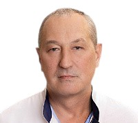
Юрий Васильевич Кисиль
Заместитель главного врача по хирургии, сосудистый хирург

Руслан Гусейнович Гусейнов
Заместитель главного врача по научной деятельности, к.м.н., доцент

Тимур Марленович Топузов
Зав. урологическим отделением №1, врач-уролог, онколог, к.м.н., высшая категория

Кирилл Евгеньевич Чернов
Зав. урологическим отделением №2, врач-уролог, онколог, к.м.н., высшая категория

Павел Вячеславович Вязовцев
Зав. онкоурологическим отделением, хирург-уролог, к.м.н., высшая категория
Дарья Андреевна Матвеева
Зав. нефрологическим отделением, врач-нефролог
Врачи-урологи
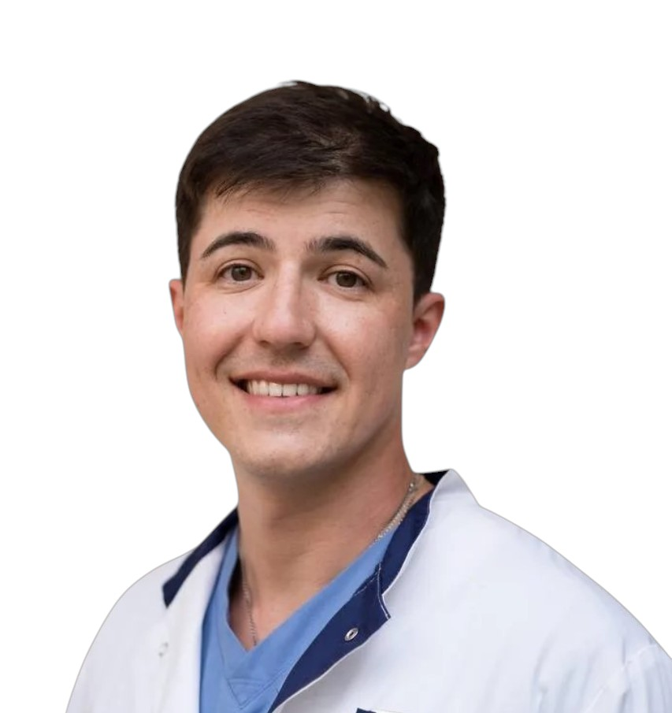
Альпин Дэнис Михайлович
Врач-уролог урологического отделения №1
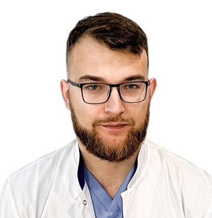
Башин Андрей Вячеславович
Врач-уролог урологического отделения №1

Бештоев Ахмед Хатауович
Врач-уролог урологического отделения №2, научный сотрудник
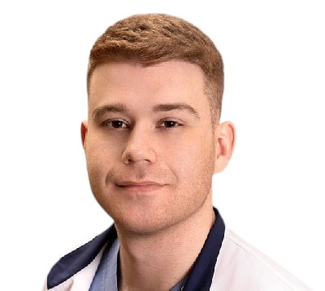
Горелик Максим Леонидович
Врач-уролог урологического отделения №2
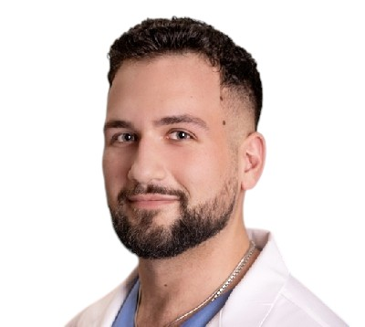
Грушевский Роман Олегович
Врач-уролог урологического отделения №2, вторая категория
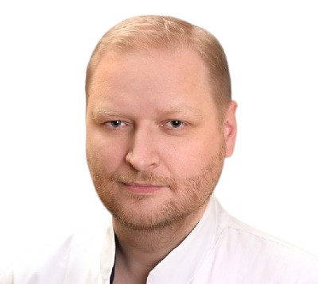
Давыдов Алексей Викторович
Врач-уролог урологического отделения №2, к.м.н., высшая категория
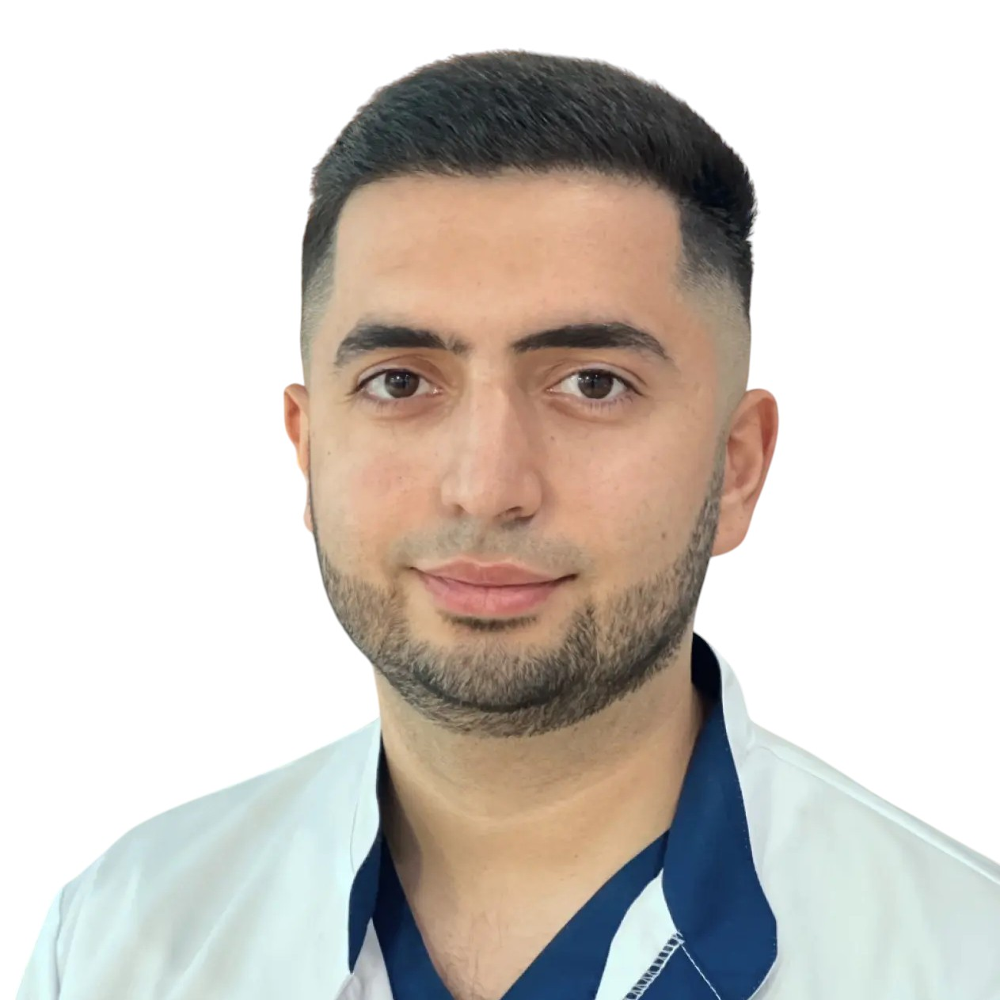
Даниелян Давид Арамович
Врач-уролог урологического отделения №2
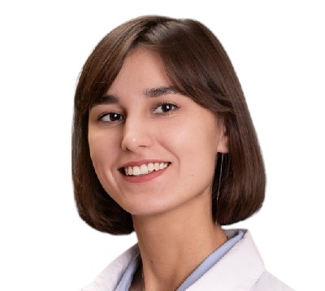
Егорова Мария Юрьевна
Врач-уролог урологического отделения №1
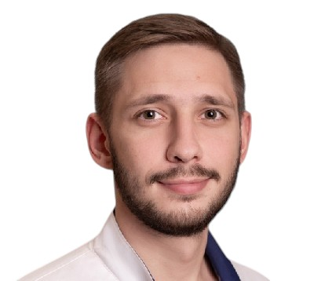
Зайцев Артем Сергеевич
Врач-уролог урологического отделения №2, вторая категория

Кондратьев Антон Сергеевич
Врач-уролог урологического отделения №1, вторая категория
Ложкин Алексей Александрович
Врач-уролог урологического отделения №1
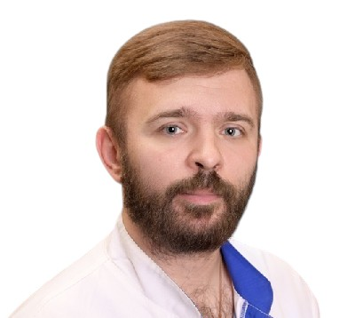
Малевич Сергей Михайлович
Врач-уролог
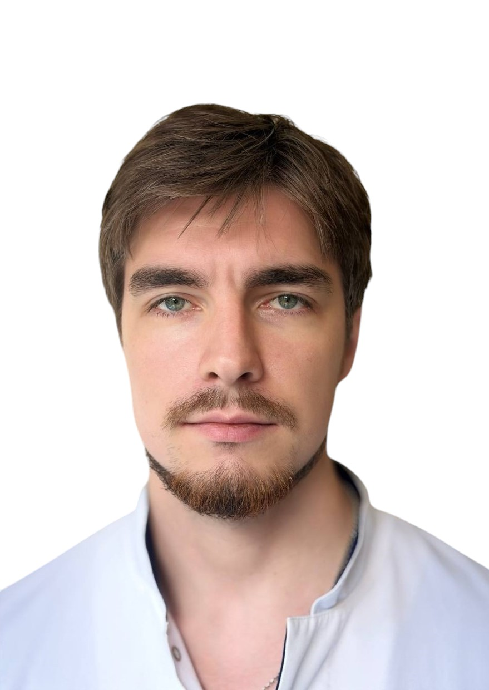
Малышев Егор Алексеевич
Врач-уролог урологического отделения №2, научный сотрудник

Пазин Иван Сергеевич
Врач-уролог урологического отделения №2, к.м.н., высшая категория
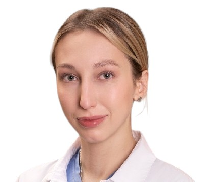
Семикина София Павловна
Врач-уролог урологического отделения №2

Сулейманов Мурад Магомедович
Врач-уролог урологического отделения №1, к.м.н., высшая категория

Сытник Дмитрий Анатольевич
Врач-уролог урологического отделения №1, к.м.н., первая категория

Цой Алексей Валерьевич
Врач-уролог урологического отделения №1, к.м.н., вторая категория